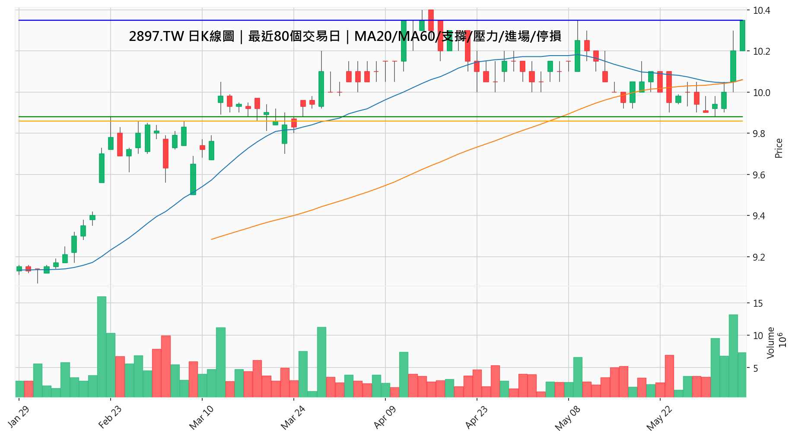
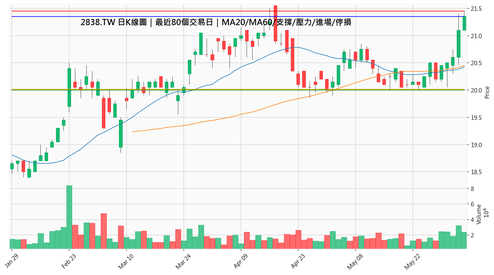
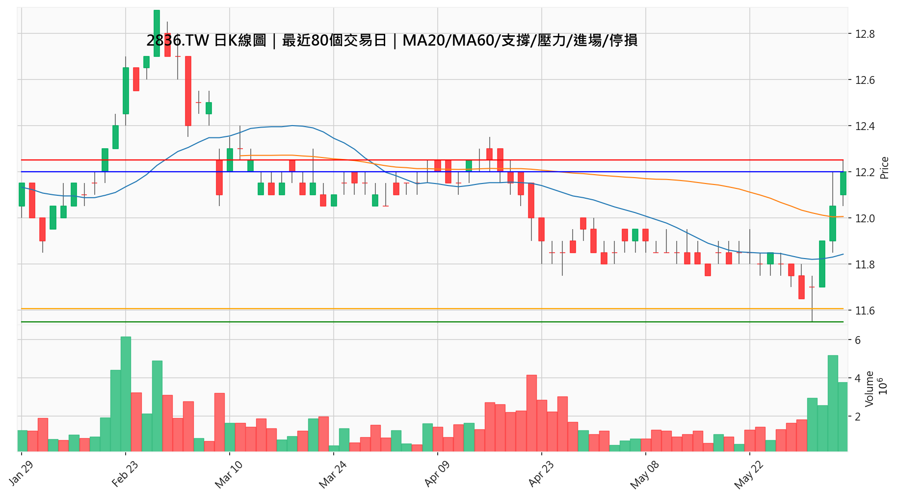

報告日期：2026-06-05
掃描類型：籌碼周報_技術分析排名
大盤判斷：大盤偏多，適合優先觀察強勢突破股。
今日最佳標的：2897.TW 王道銀乙特
總分：100 分
多週期共振：三週期共振偏多 ★★★★★
操作建議：中高強度，可列入候選
AI結論：趨勢偏多，但建議等待回測不破或突破確認。
進場：10.35
停損：9.86
第一目標：10.66
第二目標：11.18
風險報酬比：1.69
多頭燈號：5/5
| 指數 | 最新收盤 | 漲跌 | 漲跌幅 |
|---|---|---|---|
| 加權指數 | 46459.16 | +901.85 | +1.98% |
| 櫃買指數 | 446.82 | +6.18 | +1.40% |
| 排名 | 股票 | 名稱 | 總分 | 基礎分 | 共振分 | 大戶比例 | 籌碼條件 | 共振 | 日K | 4H | 1H | RR | 建議 |
|---|---|---|---|---|---|---|---|---|---|---|---|---|---|
| 1 | 2897.TW | 王道銀乙特 | 100 | 100 | 100 | 168.35% | 歷史快照不足，先以大戶持股比例排序後再做技術排名 | ★★★★★ | 🟢 | 🟢 | 🟢 | 1.69 | 中高強度，可列入候選 |
| 2 | 2838.TW | 聯邦銀甲特 | 100 | 100 | 100 | 159.77% | 歷史快照不足，先以大戶持股比例排序後再做技術排名 | ★★★★★ | 🟢 | 🟢 | 🟢 | 1.28 | 中高強度，可列入候選 |
| 3 | 2836.TW | 高雄銀甲特 | 100 | 100 | 100 | 121.72% | 歷史快照不足，先以大戶持股比例排序後再做技術排名 | ★★★★★ | 🟢 | 🟢 | 🟢 | 1.64 | 中高強度，可列入候選 |
| 4 | 2882.TW | 國泰金乙特 | 94 | 100 | 85 | 276.28% | 歷史快照不足，先以大戶持股比例排序後再做技術排名 | ★★★★★ | 🟢 | 🟢 | 🟢 | 1.14 | 中高強度，可列入候選 |
| 5 | 6592.TW | 和潤企業乙特 | 91 | 85 | 100 | 245.80% | 歷史快照不足，先以大戶持股比例排序後再做技術排名 | ★★★★★ | 🟢 | 🟢 | 🟢 | 1.20 | 中高強度，可列入候選 |
| 6 | 5871.TW | 中租-KY甲特 | 87 | 85 | 91 | 136.83% | 歷史快照不足，先以大戶持股比例排序後再做技術排名 | ★★★★★ | 🟢 | 🟢 | 🟢 | 1.22 | 中高強度，可列入候選 |
| 7 | 2881.TW | 富邦金丙特 | 86 | 90 | 82 | 356.64% | 歷史快照不足，先以大戶持股比例排序後再做技術排名 | ★★★★★ | 🟢 | 🟢 | 🟡 | 1.14 | 中高強度，可列入候選 |
| 8 | 2883.TW | 凱基金乙特 | 85 | 85 | 85 | 131.97% | 歷史快照不足，先以大戶持股比例排序後再做技術排名 | ★★★★★ | 🟢 | 🟢 | 🟢 | 1.14 | 中高強度，可列入候選 |
| 9 | 9941.TW | 裕融甲特 | 82 | 70 | 100 | 148.89% | 歷史快照不足，先以大戶持股比例排序後再做技術排名 | ★★★★★ | 🟢 | 🟢 | 🟢 | 1.26 | 中高強度，可列入候選 |
| 10 | 2348.TW | 海悅甲特 | 82 | 70 | 100 | 136.38% | 歷史快照不足，先以大戶持股比例排序後再做技術排名 | ★★★★★ | 🟢 | 🟢 | 🟢 | 3.78 | 中高強度，可列入候選 |
100 分
多週期共振：三週期共振偏多 ★★★★★
突破狀態：20日突破
操作建議：中高強度，可列入候選
AI結論：趨勢偏多，但建議等待回測不破或突破確認。

100 分
多週期共振：三週期共振偏多 ★★★★★
突破狀態：20日突破
操作建議：中高強度，可列入候選
AI結論：趨勢偏多，但建議等待回測不破或突破確認。
站上MA20站上MA60MA20大於MA60MACD偏多RSI偏強未過熱接近20日高點接近60日高點量能放大| 大戶持股比例 | 168.35% |
| 籌碼條件 | 歷史快照不足，先以大戶持股比例排序後再做技術排名 |
| 週期 | 燈號 | 狀態 | 分數 | RSI | MACD |
|---|---|---|---|---|---|
| 日K | 🟢 | 多頭 | 100 | 65.88 | 偏多 |
| 4H | 🟢 | 多頭 | 100 | 74.45 | 偏多 |
| 1H | 🟢 | 多頭 | 100 | 70.05 | 偏多 |
| 現價 | 10.35 |
| 支撐 | 9.88 |
| 壓力 | 10.35 |
| 進場參考 | 10.35 |
| 停損參考 | 9.86 |
| 第一目標 | 10.66 |
| 第二目標 | 11.18 |
| 單股風險 | 0.49 |
| 單股潛在報酬 | 0.83 |
| 風險報酬比 | 1.69 |
| 多頭燈號 | 5/5 |
| 漲跌幅 | +1.47% |
| MA20 | 10.06 |
| MA60 | 10.06 |
| RSI | 65.88 |
| MACD | 偏多 |
| 20日高點 | 10.35 |
| 60日高點 | 10.40 |
| 20日低點 | 9.88 |
| 最新量能 | 7342578 |
| 20日均量 | 4768964 |
100 分
多週期共振：三週期共振偏多 ★★★★★
突破狀態：20日突破
操作建議：中高強度，可列入候選
AI結論：趨勢偏多，但建議等待回測不破或突破確認。
站上MA20站上MA60MACD偏多RSI偏強未過熱接近20日高點接近60日高點量能放大| 大戶持股比例 | 159.77% |
| 籌碼條件 | 歷史快照不足，先以大戶持股比例排序後再做技術排名 |
| 週期 | 燈號 | 狀態 | 分數 | RSI | MACD |
|---|---|---|---|---|---|
| 日K | 🟢 | 多頭 | 100 | 67.71 | 偏多 |
| 4H | 🟢 | 多頭 | 100 | 71.25 | 偏多 |
| 1H | 🟢 | 多頭 | 100 | 67.12 | 偏多 |
| 現價 | 21.35 |
| 支撐 | 20.00 |
| 壓力 | 21.45 |
| 進場參考 | 21.35 |
| 停損參考 | 20.02 |
| 第一目標 | 21.99 |
| 第二目標 | 23.06 |
| 單股風險 | 1.33 |
| 單股潛在報酬 | 1.71 |
| 風險報酬比 | 1.28 |
| 多頭燈號 | 5/5 |

| 漲跌幅 | +1.18% |
| MA20 | 20.43 |
| MA60 | 20.45 |
| RSI | 67.71 |
| MACD | 偏多 |
| 20日高點 | 21.45 |
| 60日高點 | 21.55 |
| 20日低點 | 20.00 |
| 最新量能 | 2390564 |
| 20日均量 | 1770127 |
100 分
多週期共振：三週期共振偏多 ★★★★★
突破狀態：20日突破
操作建議：中高強度，可列入候選
AI結論：趨勢偏多，但建議等待回測不破或突破確認。
站上MA20站上MA60MACD偏多RSI偏強未過熱接近20日高點接近60日高點量能放大| 大戶持股比例 | 121.72% |
| 籌碼條件 | 歷史快照不足，先以大戶持股比例排序後再做技術排名 |
| 週期 | 燈號 | 狀態 | 分數 | RSI | MACD |
|---|---|---|---|---|---|
| 日K | 🟢 | 多頭 | 100 | 66.06 | 偏多 |
| 4H | 🟢 | 多頭 | 100 | 74.69 | 偏多 |
| 1H | 🟢 | 多頭 | 100 | 71.71 | 偏多 |
| 現價 | 12.20 |
| 支撐 | 11.55 |
| 壓力 | 12.25 |
| 進場參考 | 12.20 |
| 停損參考 | 11.61 |
| 第一目標 | 12.57 |
| 第二目標 | 13.18 |
| 單股風險 | 0.59 |
| 單股潛在報酬 | 0.98 |
| 風險報酬比 | 1.64 |
| 多頭燈號 | 5/5 |

| 漲跌幅 | +1.24% |
| MA20 | 11.84 |
| MA60 | 12.01 |
| RSI | 66.06 |
| MACD | 偏多 |
| 20日高點 | 12.25 |
| 60日高點 | 12.40 |
| 20日低點 | 11.55 |
| 最新量能 | 3769549 |
| 20日均量 | 1627736 |
94 分
多週期共振：三週期共振偏多 ★★★★★
突破狀態：轉強觀察
操作建議：中高強度，可列入候選
AI結論：趨勢偏多，但建議等待回測不破或突破確認。
站上MA20站上MA60MA20大於MA60MACD偏多接近20日高點接近60日高點量能放大| 大戶持股比例 | 276.28% |
| 籌碼條件 | 歷史快照不足，先以大戶持股比例排序後再做技術排名 |
| 週期 | 燈號 | 狀態 | 分數 | RSI | MACD |
|---|---|---|---|---|---|
| 日K | 🟢 | 多頭 | 85 | 84.23 | 偏多 |
| 4H | 🟢 | 多頭 | 85 | 85.70 | 偏多 |
| 1H | 🟢 | 多頭 | 85 | 79.11 | 偏多 |
| 現價 | 94.40 |
| 支撐 | 76.10 |
| 壓力 | 96.30 |
| 進場參考 | 94.40 |
| 停損參考 | 87.79 |
| 第一目標 | 97.23 |
| 第二目標 | 101.95 |
| 單股風險 | 6.61 |
| 單股潛在報酬 | 7.55 |
| 風險報酬比 | 1.14 |
| 多頭燈號 | 4/5 |
| 漲跌幅 | +2.83% |
| MA20 | 82.09 |
| MA60 | 76.37 |
| RSI | 84.23 |
| MACD | 偏多 |
| 20日高點 | 96.30 |
| 60日高點 | 96.30 |
| 20日低點 | 76.10 |
| 最新量能 | 53704628 |
| 20日均量 | 46557390 |
91 分
多週期共振：三週期共振偏多 ★★★★★
突破狀態：轉強觀察
操作建議：中高強度，可列入候選
AI結論：趨勢偏多，但建議等待回測不破或突破確認。
站上MA20站上MA60MACD偏多RSI偏強未過熱接近20日高點量能放大| 大戶持股比例 | 245.80% |
| 籌碼條件 | 歷史快照不足，先以大戶持股比例排序後再做技術排名 |
| 週期 | 燈號 | 狀態 | 分數 | RSI | MACD |
|---|---|---|---|---|---|
| 日K | 🟢 | 多頭 | 100 | 67.42 | 偏多 |
| 4H | 🟢 | 多頭 | 100 | 70.29 | 偏多 |
| 1H | 🟢 | 多頭 | 100 | 64.29 | 偏多 |
| 現價 | 64.40 |
| 支撐 | 59.40 |
| 壓力 | 65.20 |
| 進場參考 | 64.40 |
| 停損參考 | 59.89 |
| 第一目標 | 66.33 |
| 第二目標 | 69.83 |
| 單股風險 | 4.51 |
| 單股潛在報酬 | 5.42 |
| 風險報酬比 | 1.20 |
| 多頭燈號 | 5/5 |
| 漲跌幅 | -0.46% |
| MA20 | 60.99 |
| MA60 | 62.41 |
| RSI | 67.42 |
| MACD | 偏多 |
| 20日高點 | 65.20 |
| 60日高點 | 66.50 |
| 20日低點 | 59.40 |
| 最新量能 | 812600 |
| 20日均量 | 779661 |
87 分
多週期共振：三週期共振偏多 ★★★★★
突破狀態：轉強觀察
操作建議：中高強度，可列入候選
AI結論：趨勢偏多，但建議等待回測不破或突破確認。
站上MA20站上MA60MACD偏多RSI偏強未過熱接近20日高點量能放大| 大戶持股比例 | 136.83% |
| 籌碼條件 | 歷史快照不足，先以大戶持股比例排序後再做技術排名 |
| 週期 | 燈號 | 狀態 | 分數 | RSI | MACD |
|---|---|---|---|---|---|
| 日K | 🟢 | 多頭 | 100 | 66.49 | 偏多 |
| 4H | 🟢 | 多頭 | 85 | 77.06 | 偏多 |
| 1H | 🟢 | 多頭 | 85 | 75.34 | 偏多 |
| 現價 | 119.00 |
| 支撐 | 106.00 |
| 壓力 | 120.50 |
| 進場參考 | 119.00 |
| 停損參考 | 110.67 |
| 第一目標 | 122.57 |
| 第二目標 | 129.15 |
| 單股風險 | 8.33 |
| 單股潛在報酬 | 10.15 |
| 風險報酬比 | 1.22 |
| 多頭燈號 | 5/5 |
| 漲跌幅 | +1.28% |
| MA20 | 110.33 |
| MA60 | 111.01 |
| RSI | 66.49 |
| MACD | 偏多 |
| 20日高點 | 120.50 |
| 60日高點 | 123.00 |
| 20日低點 | 106.00 |
| 最新量能 | 24736870 |
| 20日均量 | 12213270 |
86 分
多週期共振：三週期共振偏多 ★★★★★
突破狀態：轉強觀察
操作建議：中高強度，可列入候選
AI結論：趨勢偏多，但建議等待回測不破或突破確認。
站上MA20站上MA60MA20大於MA60MACD偏多接近20日高點接近60日高點| 大戶持股比例 | 356.64% |
| 籌碼條件 | 歷史快照不足，先以大戶持股比例排序後再做技術排名 |
| 週期 | 燈號 | 狀態 | 分數 | RSI | MACD |
|---|---|---|---|---|---|
| 日K | 🟢 | 多頭 | 85 | 82.71 | 偏多 |
| 4H | 🟢 | 多頭 | 85 | 79.51 | 偏多 |
| 1H | 🟡 | 中性偏多 | 75 | 60.67 | 偏空 |
| 現價 | 114.00 |
| 支撐 | 93.30 |
| 壓力 | 116.00 |
| 進場參考 | 114.00 |
| 停損參考 | 106.02 |
| 第一目標 | 117.42 |
| 第二目標 | 123.12 |
| 單股風險 | 7.98 |
| 單股潛在報酬 | 9.12 |
| 風險報酬比 | 1.14 |
| 多頭燈號 | 3/5 |
| 漲跌幅 | +0.88% |
| MA20 | 101.64 |
| MA60 | 92.97 |
| RSI | 82.71 |
| MACD | 偏多 |
| 20日高點 | 116.00 |
| 60日高點 | 116.00 |
| 20日低點 | 93.30 |
| 最新量能 | 55185284 |
| 20日均量 | 59518692 |
85 分
多週期共振：三週期共振偏多 ★★★★★
突破狀態：轉強觀察
操作建議：中高強度，可列入候選
AI結論：趨勢偏多，但建議等待回測不破或突破確認。
站上MA20站上MA60MA20大於MA60MACD偏多接近60日高點量能放大| 大戶持股比例 | 131.97% |
| 籌碼條件 | 歷史快照不足，先以大戶持股比例排序後再做技術排名 |
| 週期 | 燈號 | 狀態 | 分數 | RSI | MACD |
|---|---|---|---|---|---|
| 日K | 🟢 | 多頭 | 85 | 83.92 | 偏多 |
| 4H | 🟢 | 多頭 | 85 | 85.94 | 偏多 |
| 1H | 🟢 | 多頭 | 85 | 84.86 | 偏多 |
| 現價 | 27.40 |
| 支撐 | 21.25 |
| 壓力 | 28.15 |
| 進場參考 | 27.40 |
| 停損參考 | 25.48 |
| 第一目標 | 28.22 |
| 第二目標 | 29.59 |
| 單股風險 | 1.92 |
| 單股潛在報酬 | 2.19 |
| 風險報酬比 | 1.14 |
| 多頭燈號 | 4/5 |
| 漲跌幅 | +6.61% |
| MA20 | 22.51 |
| MA60 | 21.25 |
| RSI | 83.92 |
| MACD | 偏多 |
| 20日高點 | 28.15 |
| 60日高點 | 28.15 |
| 20日低點 | 21.25 |
| 最新量能 | 526141147 |
| 20日均量 | 99661530 |
82 分
多週期共振：三週期共振偏多 ★★★★★
突破狀態：轉強觀察
操作建議：中高強度，可列入候選
AI結論：趨勢偏多，但建議等待回測不破或突破確認。
站上MA20站上MA60MACD偏多RSI偏強未過熱量能放大| 大戶持股比例 | 148.89% |
| 籌碼條件 | 歷史快照不足，先以大戶持股比例排序後再做技術排名 |
| 週期 | 燈號 | 狀態 | 分數 | RSI | MACD |
|---|---|---|---|---|---|
| 日K | 🟢 | 多頭 | 100 | 72.43 | 偏多 |
| 4H | 🟢 | 多頭 | 100 | 72.77 | 偏多 |
| 1H | 🟢 | 多頭 | 100 | 66.54 | 偏多 |
| 現價 | 82.00 |
| 支撐 | 72.00 |
| 壓力 | 85.00 |
| 進場參考 | 82.00 |
| 停損參考 | 76.26 |
| 第一目標 | 85.00 |
| 第二目標 | 89.25 |
| 單股風險 | 5.74 |
| 單股潛在報酬 | 7.25 |
| 風險報酬比 | 1.26 |
| 多頭燈號 | 5/5 |
| 漲跌幅 | -0.85% |
| MA20 | 74.65 |
| MA60 | 76.31 |
| RSI | 72.43 |
| MACD | 偏多 |
| 20日高點 | 85.00 |
| 60日高點 | 85.00 |
| 20日低點 | 72.00 |
| 最新量能 | 8713907 |
| 20日均量 | 2749055 |
82 分
多週期共振：三週期共振偏多 ★★★★★
突破狀態：轉強觀察
操作建議：中高強度，可列入候選
AI結論：趨勢偏多，但建議等待回測不破或突破確認。
站上MA20站上MA60MACD偏多RSI偏強未過熱量能放大| 大戶持股比例 | 136.38% |
| 籌碼條件 | 歷史快照不足，先以大戶持股比例排序後再做技術排名 |
| 週期 | 燈號 | 狀態 | 分數 | RSI | MACD |
|---|---|---|---|---|---|
| 日K | 🟢 | 多頭 | 100 | 63.94 | 偏多 |
| 4H | 🟢 | 多頭 | 100 | 73.23 | 偏多 |
| 1H | 🟢 | 多頭 | 100 | 72.79 | 偏多 |
| 現價 | 74.30 |
| 支撐 | 67.40 |
| 壓力 | 79.90 |
| 進場參考 | 74.30 |
| 停損參考 | 69.10 |
| 第一目標 | 79.90 |
| 第二目標 | 93.98 |
| 單股風險 | 5.20 |
| 單股潛在報酬 | 19.67 |
| 風險報酬比 | 3.78 |
| 多頭燈號 | 5/5 |
| 漲跌幅 | -0.67% |
| MA20 | 69.90 |
| MA60 | 74.24 |
| RSI | 63.94 |
| MACD | 偏多 |
| 20日高點 | 79.90 |
| 60日高點 | 89.50 |
| 20日低點 | 67.40 |
| 最新量能 | 1474514 |
| 20日均量 | 371312 |